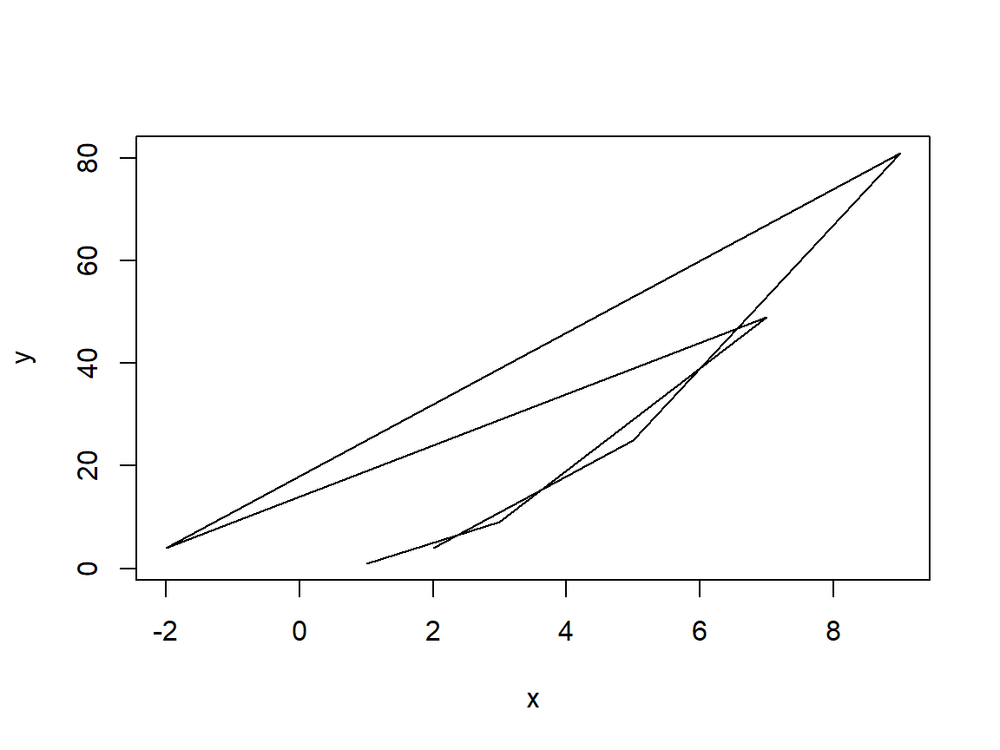
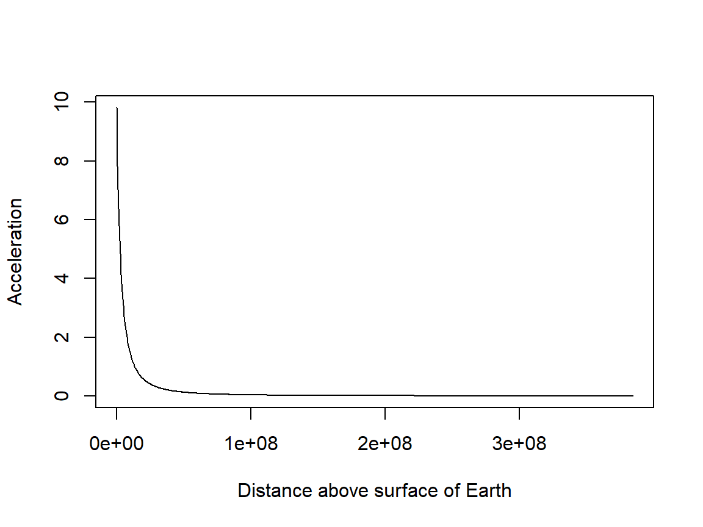
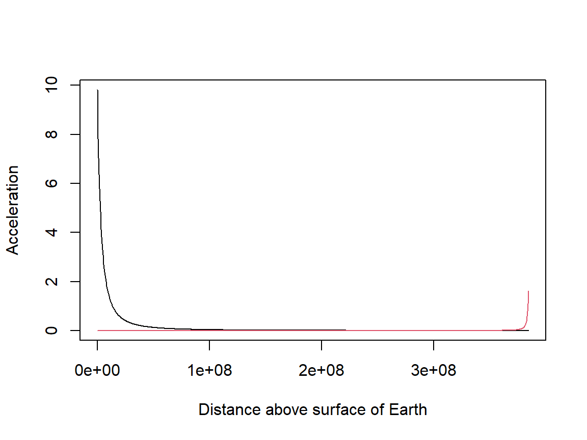
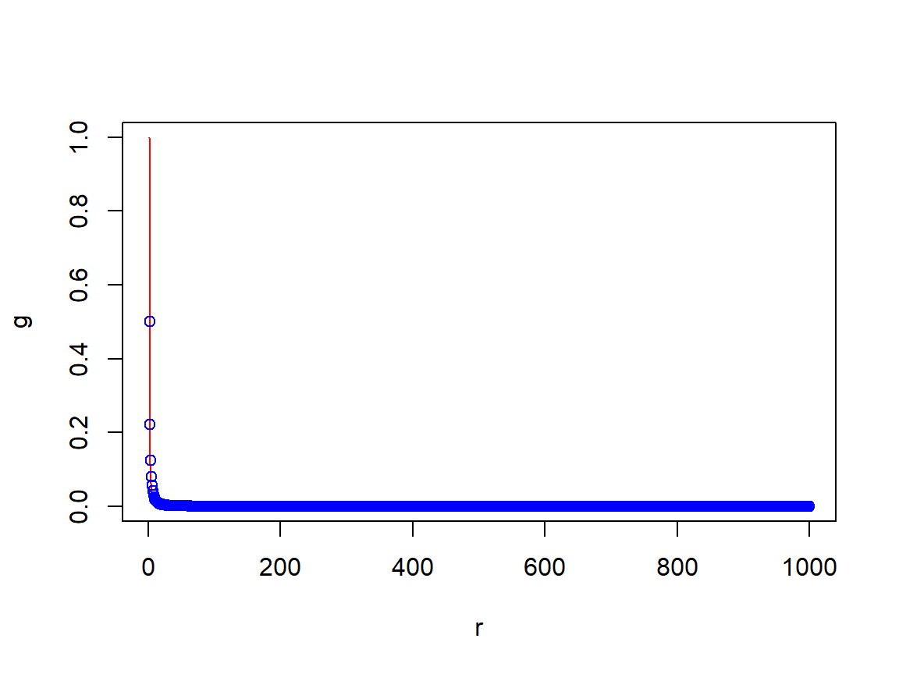

MATH482: Statistical Learning
1 Introduction to R
The purpose of this chapter is to provide you with a gentle introduction to R as an environment for working with and analysing data.
1.1 Background on R
R is a free and open-source programming language for statistical computing and graphics. “Open-source” means that the code that was written to create the R environment is available free of charge for others to use and modify from its original design. Open-source software is typically thought of as a collaborative effort where people improve upon the source code and share the changes within the community so that other members can take advantage of their work, as well as help improve it further.
These features mean that R has become the most powerful and flexible domain-specific statistical programming language in the world. However, R’s statistics-specific nature also means that we should regard it as just one of the tools, albeit a powerful tool, in the toolbox available to the modern data scientist.
1.2 Getting started with RStudio
1.2.1 Installing R and RStudio
Versions of R are available for Windows, Macs and Linux. To download and install R visit the website http://www.r-project.org. You will also need RStudio (http://www.rstudio.com).
Note: If you are using one of the computers in the lab, both of these will already be installed.
1.2.2 R extensions
R has a rich ecosystem of extensions (packages, more on that later) that cater for nearly every statistical situation you can think of. The main repository for R packages is CRAN (the Comprehensive R Archive Network).
- Many people also upload their code as packages to their own repositories, e.g. on github
1.2.3 Saving your work on the Lancaster Windows network
If you are using a university Windows computer or are remotely connected to a Windows virtual machine, start by finding your home folder (your H: drive). The H: drive will be made accessible to you no matter which university computer you use. Access it via File Explorer > This PC. This is the best location to save all your files (reports, scripts, plots, data sets, and everything else).
do NOT save files to the local (C:) drive as they will probably not be there when you next login.
Also, ISS makes regular backups of your H: drive, so if you ever permanently delete a file they should be able to recover a previous version of it.
1.2.4 RStudio and the console
Start by opening R Studio. R Studio tries to makes best use of the screen by splitting it up in to three panels:

- An interactive R console (or REPL) – enter R statements manually at the prompt at the bottom (look for the
>symbol). - Environment – data structures stored in memory show up here, including things like data sets, plots, and models.
- Stuff – a miscellaneous panel that has various uses, as you will see later. For now, click on the Plot tab. The panel should become blank (since we have not made any plots yet).
1.3 Statements, expressions and objects
We will begin by only using the console panel. In the console, we can type R statements and have them evaluated each time we hit Enter.
- Try entering a very simple statement: an expression that adds of two numbers. Type the following and press
Enter.
## [1] 9Pressing
Enterinstructs the console to evaluate the statement. And since our statement is an expression (i.e. statement that has a result), the result of evaluating the expression is printed back.- The
[1]refers to the fact that our expression evaluates to a single object, in this case a scalar taking the value 9.
- The
| Operation | Example |
|---|---|
| Add | 2 + 3 |
| Subtract | 2 - 3 |
| Multiply | 2 * 3 |
| Divide | 2 / 3 |
| Modulus | 2 %% 3 |
| Square root | sqrt(2) |
| Power | 2^3 |
| Cosine | cos(2 * pi) |
| Sine | sin(pi / 2) |
| Tangent | tan(pi / 4) |
| Natural log | log(2) |
| Expontential | exp(2) |
Using numbers of your own, try some other basic mathematical expressions listed below
Once you’re happy, try combining some of these expressions into more complicated expressions, for example:
As with mathematics, R’s operator precedence follows the BODMAS rule: Brackets, then Orders (powers, square roots), then Division, then Multiplication, then Addition, then Subtraction.
Brackets, then, are key to controlling the order of operations within an expression, for instance \[ \frac{\sqrt{3/4}}{\frac{1}{3} - \frac{2}{\pi^2}}. \]
## [1] 6.626513Combining expressions, as we did above, may become tedious, especially if we wish to re-use the same expression many times.
Better is to store the evaluation of such an expression in memory, so that we can use it later.
To store the result of evaluating an expression we assign them to objects using the assignment operator <-.
## [1] -5Lines 1 and 2 simply evaluate the expressions on the right of <- and store the results in objects named apple and banana respectively. Line 3 is an expression statement, in which R substitutes the values of apple and banana into the expression apple - banana and evaluates it.
- If you look in the environment panel of RStudio, you should now see two objects listed. These objects are now part of our working environment. We can access their contents by entering their names into the console:
## [1] 4## [1] 9NB: R will not hesitate in overwriting an object if you try to assign its name to a new object (R does not issue a warning):
## [1] -100- We can also modify the value of an object by referencing itself:
## [1] -99Note: it is possible to use the equals (=) sign instead of <- in R, but it is preferable to stick with <- for assignment statements.
- They are functionally different in certain contexts, but work exactly equivalently for assignments
In the above we have only encountered numeric objects which by default are of type double (referring to the level of precision with which the computer is storing that number) and of class numeric, but there are very many other object types supported in R. For example, it is sometimes convenient to assign a value to an object which is some description of it. We can do this by writing this description in inverted commas, creating a character object, and assigning this to the object:
## [1] "David"## [1] "character"## [1] "numeric"Later on we will encounter logical objects, which form an integral component of computer programming as they allow us to perform operations only under certain conditions, thereby dictating the flow of our programme depending on, e.g. values taken by various objects during the entire process.
1.3.1 Vectors
R has been optimised to work with vectors, and any time we can modify a piece of code to exploit this we can likely massively speed up the time it takes to run.
A vector is like a list of numbers, and can be created in R in a number of ways, most directly with the function c(), as in the following.
## [1] 1 3 -8 5A lot of mathematical operations we looked at before also work for vectors
- applying one of the mathematical operators we saw before to a vector and a scalar (a single number) will map the resulting expression to each element in the vector:
## [1] 3 5 -6 7## [1] 2 6 -16 10## [1] 0.5 1.5 -4.0 2.5But what happens if y were a vector like x?
## [1] 2 4 -6 12## [1] 1 3 -16 35You can see that R has applied the operator element-wise, i.e. the first element in x and the first element in y, the second element in x and the second element in y, etc.
Note: this works as desired when both
xandyhave the same length. However, R will still try to make the operation work even if they are not of the same length, by repeating the shorter vector as many times as needed. Still, to ensure things work as we want, it is prudent to try and only use same length vectors unless you’re perfectly confident in how R will work otherwise.You can retrieve the length of a vector with the “length” function:
## [1] 4## [1] 4Another way to create vectors with a regular structure is with the seq() function:
## [1] 1 2 3 4 5 6 7 8 9 10## [1] 1 3 5 7 9Instead of defining the gap between successive entries (the by argument above), we could equally decide the length of the vector we want out:
## [1] 1 2 3 4 5 6 7 8 9 10If we want simply to create a sequence of integers, we can also use the notation from:to:
## [1] 1 2 3 4 5 6 7 8 9 10## [1] 6 5 4 3 2 1 0 -1 -2 -3 -4 -5 -6Indexing a Vector
If we want to extract only some of the elements in a vector, we can use the syntax vector[indices], where the indices inside [] is either an integer, telling R which entry in the vector to extract, or a vector of such integers:
## [1] 6## [1] 4 3 2 1 0## [1] -1 6- NB: The indices in a vector of length
Lin R are1:L, which is different from many other programming languages, which use zero as the first index
1.3.2 Matrices and Arrays
A matrix may be seen as a simple extension of a vector, and is a table of numbers; like stacking vectors next to one another in columns (or turning them sideways (transposing them) and stacking them on top of one another in rows). As with vectors, there are multiple ways in which we can create a matrix.
Two simple ways to construct a matrix are column-binding (with the function cbind) and row-binding (with the function rbind):
## [,1] [,2]
## [1,] 1 -6.00
## [2,] 2 -2.75
## [3,] 3 0.50
## [4,] 4 3.75
## [5,] 5 7.00## [,1] [,2] [,3]
## [1,] 1 2 3
## [2,] -8 1 19Similar to how R will replicate a vector multiple times if we try to apply operators to two vectors of different length, R will try to bind vectors of different length:
## [,1] [,2]
## [1,] 1 2
## [2,] 1 8
## [3,] 1 -1## [,1] [,2] [,3] [,4] [,5] [,6]
## [1,] 1 2 1 2 1 2
## [2,] 1 3 -3 5 6 7As an alternative we can create a matrix directly with the function matrix(data, nrow, ncol). By default this function will take the entries in the vector data and fill the matrix column by column:
## [,1] [,2]
## [1,] 1 6
## [2,] 2 7
## [3,] 3 8
## [4,] 4 9
## [5,] 5 10If we want R to instead fill the matrix row by row, we set the optional argument byrow = TRUE:
## [,1] [,2]
## [1,] 1 2
## [2,] 3 4
## [3,] 5 6
## [4,] 7 8
## [5,] 9 10The transpose of a matrix is simply a “rotation” (although not in the algebraic sense) of the matrix, which swaps its rows and columns, and is obtained with the function t():
## [,1] [,2] [,3] [,4] [,5]
## [1,] 1 3 5 7 9
## [2,] 2 4 6 8 10When we start to use the algebra of vectors and matrices the transpose will become increasingly important
- Those on the MSc Statistics will be very well acquainted with matrix algebra by now, and those on the MSc Data Science, some of whom are not yet, will learn much more in the Foundations of Data Science and AI module
The size of a matrix can be obtained using dim() which outputs the number of rows and the number of columns, or nrow() and ncol() which output the number of rows and columns respectively:
## [1] 5 2## [1] 5## [1] 2Arrays follow the same ideas as vectors and matrices, but are more general in that they have an arbitrary number of dimensions. For example, an array with only one dimension is a vector, and one with two dimensions is a matrix. We will not be working much with arrays having more than two dimensions.
Indexing Matrices
The same indexing rules as we had for vectors applies for matrices, except now we need to specify which rows and which columns we want to extract. As before we use the square brackets [] to specify the indices we want, and we now separate the row and column indices by a comma:
## [,1] [,2] [,3] [,4] [,5]
## [1,] 1 7 13 19 25
## [2,] 2 8 14 20 26
## [3,] 3 9 15 21 27
## [4,] 4 10 16 22 28
## [5,] 5 11 17 23 29
## [6,] 6 12 18 24 30## [,1] [,2]
## [1,] 1 19
## [2,] 2 20
## [3,] 3 21## [1] 16If we want all columns (or all rows) we simply leave the corresponding field empty:
## [,1] [,2] [,3] [,4] [,5]
## [1,] 1 7 13 19 25
## [2,] 2 8 14 20 26## [,1] [,2]
## [1,] 13 25
## [2,] 14 26
## [3,] 15 27
## [4,] 16 28
## [5,] 17 29
## [6,] 18 30## [,1] [,2] [,3] [,4] [,5]
## [1,] 1 7 13 19 25
## [2,] 2 8 14 20 26
## [3,] 3 9 15 21 27
## [4,] 4 10 16 22 28
## [5,] 5 11 17 23 29
## [6,] 6 12 18 24 301.3.3 Lists
Vectors/matrices/arrays will only allow one to store contents which have the same object type. In fact, if you try to combine objects of different types R will coerce some of them into different types so that they can be stored together. For example
## [1] "character"## [1] "numeric"## [1] "David" "190"## [1] "character"Since it is not clear how to turn the character object "David" into a numeric object, but it is comparatively clear how to convert the numeric 190 into a character, R “coerces” the object my_height into a character so that it can store them together.
Lists are an alternative way of storing multiple objects, but unlike vectors, matrices, arrays, etc. they don’t have a rigid structure. For example, we can create a list containing a numeric object, a vector of character objects and an entire other list.
## [[1]]
## [1] 190
##
## [[2]]
## [1] "David" "boo"
##
## [[3]]
## [[3]][[1]]
## [1] 1When printing a list R hints at how we can extract individual fields, i.e. with the use of double brackets [[]]:
## [1] "David" "boo"Note that there is a clear distinction between list[[index]] and list[index] where the former will extract the indexed object itself from the list, whereas the latter is a “sub-list” containing only the indexed object.
However, lists also provide a more appropriate means of storing and extracting their contents. The object my_list above is an “un-named” list since we didn’t give names to the different fields. We can either name the fields in a list after creating it or we can name them when we initially create it. When we want to isolate a particular field by name we use the “dollar sign”, i.e. list$fieldname.
## [1] "my_height" "name_and_boo" "another_list"## [[1]]
## [1] 1my_list_2 <- list(
name = "David",
height = 190,
birth_place = list(Country = "South Africa",
City = "Johannesburg")
)
my_list_2$name## [1] "David"## $Country
## [1] "South Africa"
##
## $City
## [1] "Johannesburg"We will work a lot in this module with special types of lists called a data frames.
1.3.4 Summary
- There is a priority of operations in arithmetic statements in R: raising to a power (
^), multiplication and division (*and/), addition and subtraction (+and-). Operations are performed left to right, and priorities are overridden by parentheses.
## [1] -84- Results can be stored in objects using the assignment statement:
<-. Object names are case sensitive. Type the name into the console and R will print the contents.
## [1] 0 1 4 9 16 25 36 49 64 81 100- Vectors (and matrices) are lists of numbers with special mapping properties. To create a vector of numbers in the console, we use,
c(), the combine function. Arithmetic operations work on vectors with the same priorities as single numbers. Useseq()to create a vector containing a specific number sequence, the parameters;byandlengthcan be used to control the sequence.
days_long <- c(1, 2, 3, 4, 5, 6, 7)
days_quick <- 1:7
half_days <- seq(1, 7, by = 0.5)
days_long + 0.5## [1] 1.5 2.5 3.5 4.5 5.5 6.5 7.5## [1] 2 3 4 5 6 7 8 9 10 11 12 13 14## [1] 1 2 3 4 5 6 7 1 2 3 4 5 6 7- You can extract selected indices from a vector (or matrix) using the syntax
vector[indices](ormatrix[row_indices,column_indices])
## [1] 1 2 3- Lists provide a more dynamic means of storing objects as they do not have a rigid dimension nor are they restricted to containing objects of the same type. We can name the fields in a list and extract them by name using the “dollar sign” syntax. We can also add fields after creating a list.
my_new_list <- list(to_do = list(item1 = "finish this list"))
my_new_list$completed <- list(item1 = "First section of Intro to R")
my_new_list$to_do$item2 <- "Second section of Intro to R"
my_new_list## $to_do
## $to_do$item1
## [1] "finish this list"
##
## $to_do$item2
## [1] "Second section of Intro to R"
##
##
## $completed
## $completed$item1
## [1] "First section of Intro to R"1.4 Basic plots
Visualisation is an extremely powerful and efficient way of communicating information. As statisticians and data-scientists we often rely on visualisations of data, or of the outputs of our statistical models, in order to use these to make effective decisions.
The plot() function in R is a versatile tool for producing these visualisations
- There are a number of other general purpose plotting options, but for this module we will only use the basic plotting functionality
- For those who are interested the
ggplotpackage and its derivatives have become very popular, and use a modular approach for producing visualisations
The way in which plot() produces a graphic depends on the type of arguments given to it. For example, if we try to plot a vector we will see the values in the vector along the vertical axis, and the positions of these values will be equally spaced on the horizontal axis:
If we wish to see the relationship between two vectors of equal length, we can provide both as arguments to plot(). Values of the first will be plotted against the horizontal axis and the corresponding values of the second along the vertical axis:
By default we see this relationship via a set of points in the \((x,y)\) plane, but we can also plot the graph of these as we would draw a function by using the argument type = 'l' (l for line). However, note that R will try to connect the points to form this graph in the order they appear.

To “correct” this behaviour we should provide x in either increasing or decreasing order (and re-order the elements in y appropriately):

We could also do this by finding the ordering of the indices in x which leads to them being sorted:
1.4.1 Example: Gravitational Force
Newton’s law of gravitation tells us that the acceleration due to the gravitational force exerted by an object is determined by the equation \[ a = G \frac{M}{r^2} \ m.s^{-2}, \] where \(G \approx 6.6728 \times 10^{-11}\) is the gravitational constant, \(M\) is the mass of the object and \(r\) is the distance from its centre of gravity.
This means that gravity at the surface of Earth (which weighs approximately \(5.9736 \times 10^{24} \ kg\) and has an average radius of approximately \(6.37 \times 10^6 \ m\)) is approximately equal to \(\frac{6.6728 \times 5.9736}{6.37^2} \times 10^{-11+24-12} \approx 9.82 \ m.s^{-2}\).
But what if we were to shift higher and higher above the surface of the earth, say by a distance of \(d\) metres? First let’s set up what is fixed (our constants):
Then let’s consider distances up to the distance from Earth to the moon (approximately \(3.844\times 10^8 \ m\))
d <- seq(0, 3.844*10^8, length = 1000)
plot(d, G*M_earth/(r_earth+d)^2, ylab = 'Acceleration', xlab = 'Distance above surface of Earth', type = 'l')
We can see that as \(d\) increases the force quickly decreases towards zero (according to an inverse square law). Without a sense of the scale of \(d\), however, it may be unclear how to interpret this in a realistic sense. We can add vertical or horizontal lines to a plot using the function abline(v = ) or abline(h = ). For example, let’s add a vertical line indicating the height at which GPS satellites orbit, approximately \(20 200 \ km = 2.02 \times 10^7 \ m\):
plot(d, G*M_earth/(r_earth+d)^2, ylab = 'Acceleration',
xlab = 'Distance above surface of Earth', type = 'l')
abline(v = 2.02*10^7, lty = 2)We can add more interesting lines to a plot using the function lines(), which behaves similar to plot(, type = 'l') but adds the line to an existing plot rather than creating a new one.
- The function
points()can also be used, and behaves almost exactly asplot()only adding its data to an existing plot rather than creating a new one. Specifically,points(, type = 'l')andlines()are functionally equivalent.
Let’s add a line showing acceleration due to the moon’s gravity, if we consider that the vertical trajectory as we move above the surface of Earth is directly in the direction of the moon. At a distance \(d\) metres above the surface of Earth they will be \(3.844\times 10^8 - d\) metres above the surface of the moon. Incorporating the mass and radius of the moon, we have:
M_moon <- 7.346 * 10^22
r_moon <- 1.737 * 10^6
d_moon_to_earth <- 3.844*10^8
plot(d, G*M_earth/(r_earth+d)^2, ylab = 'Acceleration', xlab = 'Distance above surface of Earth', type = 'l')
lines(d, G*M_moon/(r_moon + (d_moon_to_earth-d))^2, col = 2)
- Try modifying the above by replacing the call to the function
lines()with one using the functionpoints().
For most of this trajectory the force from both bodies is very small relative to the gravitational force experienced at the surface of either of them (of course these forces also operate in opposite directions). Gravity on the surface of the moon is much less than on Earth, by roughly 6 times:
## [1] 6.0465271.4.2 Summary
- The
plot()function produces a plot of \((x, y)\) points using two vectors. Whether points are used or a line is draw is determined by thetypeparameter (type = "l"for lines, ortype = "p"for points). Thepoints()function has the same parameters asplot()but will add it’s data to an existing plot, rather than create a new one.
r <- 1:1000
g <- 1 / r^2
plot(x = r, y = g, type = "l", col = "red")
h <- g * 2
points(x = r, y = h, type = "p", col = "blue")
- The function
ablinecan be used to add a straight line to a plot, either providing argumentsaandbfor the intercept and slop, or one ofvfor a vertical line orhfor a horizontal line
1.4.3 Exercises
The exercises that follow can be carried out using the techniques and functions you have learned so far. Expect to make some mistakes. But if you start to get annoyed either take a break or ask for help.
- Evaluate the following expressions:
- \(\frac{49^2 - 542}{42 + 63^2}\)
- \(a^2\) for \(a = 1, 2, \ldots, 10\)
- Create plots for different powers of \(x\):
- Create a vector, \(x\), which goes from -100 up to 100.
- Create a new plot showing \(y = x^2\).
- Add a red line to the existing plot showing \(y = x^4\).
1.5 R scripts
Some of you may start to be feeling at least slightly frustrated having to type commands line by line in to the console panel. Particularly, if you are like me and you often make mistakes, meaning that you have to re-enter the whole line.
So far we have only written fairly short statements, and typically these have not depended on one another to a large extent. However, as our code begins to become more and more complex, potentially including intricate conditional components, it is very easy for small mistakes (“bugs”) to compound and cause our entire program to fail, or to produce erroneous outputs/results.
It should be clear that having to re-type all of the statements coming after the mistake (assuming there is only one, and that we are able to locate it) is absurd, and that keeping a record of the statements comprising a piece of work in an appropriate file is an obvious answer.
Fortunately, like all programming languages, R allows us to maintain a list of commands in a file we refer to as an R script. This script can then be edited (correcting our mistakes) as well as processed, either as a whole or line-by-line. The main advantage of this is that we can save and close a script, switch off our computers and go home, with the intention of carrying on at a later time.
1.5.1 Creating and saving an R script
Let us put the commands we used for calculating acceleration due to Earth’s gravity into an R script. To do this in RStudio, go to File > New > Script (or pressing Ctrl + Shift + N). This will have created a Script panel, resizing the Console window to be smaller. The Script panel has some useful features that will be discussed in more detail, but the nicest one is that as we type out commands in the script, they will be colour-coded, making it easier to read.
One-by-one, type the commands used for the gravity calculations into the script panel. Your script should look like this:
G <- 6.6728 * 10^(-11)
M_earth <- 5.9736 * 10^24
r_earth <- 6.37 * 10^6
d <- seq(0, 3.844*10^8, length = 1000)
a <- G*M_earth/(r_earth+d)^2
plot(d, a, ylab = 'Acceleration', xlab = 'Distance above surface of Earth', type = 'l')In the script panel, all of the usual text editing tools are available; cut, copy, paste, highlight and delete. If you want to split a command over more than one line, then just break it after a comma, or where it is obviously not complete.
For example, as far as R is concerned, these two ways of creating the d object are exactly the same:
We can also break calculations over multiple lines, as long as it is obvious that we plan on entering more code, such as ending a line with a plus:
## [1] 36## [1] 36When we enter commands into an R script, these are not being processed by R. It is good to think of writing in a script as a way of preparing commands for R. Note that, even with a script open, you are still free to type directly into the console. To do so, simply click into the console panel and start typing. Click on the script to carry on writing there.
A good habit when writing scripts is to save frequently. Go to File > Save and save the script as Lab0-Gravity.R, somewhere on your H drive where you will be able to find it again. You may want to create a folder called R-Programming and save the script in there. If you double click a file with the .R extension, RStudio will automatically try to open it, just like how Word is used to open .doc and .docx files.
1.5.2 Running an R script
Given that you have typed out and saved the gravity commands, we are now ready to let RStudio run it! To do this highlight all the lines in your script and then click on the run button:
By using the highlight-and-run technique we can highlight just small parts of our script that we want to re-run. Also, using the keyboard shortcut Ctrl + Enter (or Ctrl + R) means you do not have to click the run button. And if no code is highlighted, then it will simply send the current line (wherever the cursor is located) to the console.
- If you want to run the script line-by-line, you can navigate to the first line you want to run and then repeatedly press
Ctrl + Enter(orCtrl + R). Each time a new line will be run. This can be especially useful when debugging.
Another way to run scripts is by sourcing them. To do this you need to know the full path of where the R script is stored, as well as the name of the script. For example, say, I store my gravity script in the following location: H:\My Awesome R Scripts\Lab0-Gravity.R. Then in order to source it I would enter into the console the following command:
There are two things you must remember; (i) on Windows the backslashes in filepaths must be entered in R as either double backslashes or as forward slashes, and (ii) put the complete file name in quotes. If you have got the path or file name wrong, R will tell you that it cannot find the file.
If there is something wrong with your code when sourcing, R will give you a more or less useful error message, at least making it obvious where the error occurred.
1.5.3 Adding comments to your script
The best programming habit you could ever develop is putting informative comments in your code.
Any line in your R script that begins with # will be ignored by R. Similarly if you use a # in the middle of a line, the remainder of that line will ignored. By using # we are able to add comments to our commands, and even “comment-out” our code. Type out the following script for calculating gravity, include the comments. Once you have typed out the script be sure to save it, as we will be modifying it soon. You can also use Ctrl + C in RStudio.
Everyone prefers a different amount of commenting. So I strongly recommend you to develop your own style (this no excuse for having no comments). For more complex code, a general recommendation is to comment less on what the code is doing but rather on why the code is doing what it is doing (the example below is not following this principle too much).
# Look at the relationship between acceleration due to
# gravity and distance from the Earth's surface.
# ref: http://en.wikipedia.org/wiki/Gravity_of_Earth
# Constants ----
# Gravitational constant (m^3 kg^-1 s^-2)
G <- 6.6728 * 10^-11
# Approximate average radius of the Earth (m)
r_earth <- 6.37 * 10^6
# Approximate mass of the Earth (kg)
M_earth <- 5.9736 * 10^24
# Generate distance vector from Earth's surface (0m)
# up to the distance between Earth and the moon (384,400 km)
d <- seq(from = 0, to = 3.844*10^8, length = 1000)
# We measure from the centre of the Earth to the centre of
# the other object:
r <- r_earth + d
# Earth's gravitational acceleration based on distance
a <- G * M_earth / r^2
# Produce the plot ----
# Set distance to km instead of m for x-axis labels
d_km <- d / 1000
plot(x = d_km, y = a, type = "l",
xlab = "Distance above surface of Earth (km)",
ylab = "Acceleration")1.5.4 Summary
An R script is a prepared list of R commands that are processed sequentially by R from top to bottom. Using the script editor in RStudio, scripts can be written, edited, saved, and run.
To create a new script go to File > New > R Script. To open an existing scrip, File > Open…. If you have more than one script open, RStudio will create tabs across the top of the script panel.
R scripts have the file extension
.R, make sure you include this when saving your script for the first time.Running an R script means sending the contents of the script to the console. Portions of the script can be sent by highlighting the relevant code and click the
Runbutton or using the shortcutCtrl + Enter.Scripts will often contain bugs. Bugs are usually caused by a missing common or bracket, or from an incorrect object name. In order to track down bugs, try running your script one section at a time. Followed by one line at a time, when you have found the offending section.
By starting a line with
#we are able to add comments to our code, as R will ignore any text to the right of this symbol. Adding comments, to break-up your code into sections as well as explain the purpose of each section, is crucial for future you to understand the purpose of your script, what it is trying to achieve, and what features are still yet to be added.
1.6 R markdown
R Markdown is a file format for making dynamic reports that combine code, text, and formatting. An R Markdown document is written in markdown, an easy-to-write plain text format, and contains chunks of embedded R code.
Differently from an R script, that is a simple text file, an R Markdown script is a text document that combines code with text and formatting to create a dynamic report. The code is organized into chunks that can be executed to produce output, such as tables and plots. You can interactively access and edit the .Rmd file in Rstudio. In addition, the .Rmd document can be rendered (exported) into various output formats, such as HTML, PDF, or Word, making it easy to share and present your results and ensure that they can reproduce your results. You will be required to submit an .Rmd for your coursework, as well as the rendered output document in html.
In fact the very notes you are reading now were written entirely in .Rmd, and compiled to be an interactive webpage!
1.6.1 R markdown basics
To write paragraphs, such as this one you are reading now, simply separate text in a .Rmd file with a blank line.
To write titles and subtitles, you can use the # symbol followed by a space and the text of the title. The number of # symbols determines the level of the heading, with one # being the highest level and six # being the lowest. For example:
# Title
## SubtitleR chunks are used to embed R code in an R Markdown document. They are enclosed in triple backticks and start with {r}:

This will generate an R chunk, as the one below, that will get evaluated, including its output.
## speed dist
## 1 4 2
## 2 4 10
## 3 7 4
## 4 7 22
## 5 8 16
## 6 9 10Try to create a new .Rmd file from R studio and give it a try yourself! Go on file > new file > R markdown. There will be a window popping up, fill in the details and see for yourself the new .Rmd document!
A video illustrating R markdown, produced by one of my colleagues, can be found below:
These whole set of lecture notes was generated in Rmarkdown!
If you want to learn more about .Rmd, see the official webpage Using R Markdown.
1.6.2 Exercise
Based on your gravity script, edit your code so that the gravity plot includes a horizontal line illustrating the magnitude of gravitation acceleration at the surface of the moon. Work in an R markdown to make sure your analysis, from the start to the final plot, is reproducible. Add some textual notes in the .Rmd file which describe the contents of the plot.
1.7 Functions
Functions are a really important concept both in mathematics and computing. They are typically used to abstract away detailed computations that perform an operation (or set of operations) on some input, and return an output. In mathematics, we are well used to defining functions, such as \[ f(x) = x^2 \] or \[ f(x; \mu, \sigma) = \frac{1}{\sqrt{2\pi}\sigma} \exp\left(-{\frac{(x - \mu)^2}{2\sigma^2}}\right). \]
Mathematical functions have (input) arguments (\(x\), and \(x, \mu, \sigma\) respectively above), and typically return the result of evaluating the expression on the right hand side of the equality sign.
Functions in computer languages are similar to mathematical functions, except they can be regarded as entire computations in themselves, perhaps performing an entire set of steps such as training a neural net by gradient descent methods. Indeed, in our daily programming, it is a very good idea to use functions liberally to avoid un-necessary or repetitive code that can be prone to errors.
We have already used several functions:
c(...)Combines objects often into a vector, where the comma-separated argument list represented by...takes objects or values to be combined.seq(from, to, by)Generates a vector containing a seq of numbers specified by the argumentsfrom,toandby.plot(x, y)Creates a scatter plot of points using argumentsxandyas co-ordinates for the points.length(x)Returns the number of elements in the vectorx
Here are some other functions that can be useful when working with vectors:
sum(x)Returns the total from adding all the elements inxtogetherprod(x)Returns the total from multiplying all the elements inx. Note thatprodis short for product which is the mathematical name given to this process.sqrt(x)Returns a vector of the same length of , but each element is the square-root of the corresponding element inx.max(x),min(x)Returns the maximum and minimum element from a vector, respectively.
Try them out:
## [1] 54## [1] 0## [1] -1## [1] 10## [1] NaN 0.000000 1.000000 1.414214 1.732051 2.000000 2.236068 2.449490
## [9] 2.645751 2.828427 3.000000 3.162278For the sqrt(x) command, we were giving a warning saying NaNs had been produced. NaN is short for “Not a Number” and in this instance they have occurred because we tried to calculate the square-root of a negative number (which do not exist as real numbers). Once an element becomes Not a Number, that status will persist throughout the rest of our calculations. For example:
## [1] NaN NaN 0 NaN NaNBecause sqrt(x) and sqrt(y) produced NaNs that were in different places, this resulted in us producing four NaNs when adding the two square-rooted vectors together.
1.7.1 Creating New Functions
R, like all modern programming languages, allows you to create your own functions. This is a great time saver when you are repeatedly performing the same computation, albeit on different data sets. Writing your own functions is definitely a habit you should develop.
Our previous code could not be easily re-used without copy and pasting, and it should be pretty obvious that copying blocks of code all over the place greatly increases the chance of errors – maybe you dropped your coffee on your keyboard, or your cat inadvertently hit the delete key somewhere in a long script!
Instead, we can abstract our gravity computation into a function called calc_gravity, which should be added to a new R script:
calc_gravity <- function(distance) {
# constants
G <- 6.6728 * 10^(-11)
M_earth <- 5.9736 * 10^24
r_earth <- 6.37 * 10^6
# calculation
r <- r_earth + distance
a <- G * M_earth / r^2
return(a)
}Now run the code. You will see nothing really happened, and by now you shouldn’t expect it to: we assigned the result of evaluating the expression function(distance) { ... } to an object calc_gravity. We can think of this as the keyword function telling R to build a function which encapsulated the gravity computation taking a single argument distance, which we assign to the name calc_gravity.
This gives us three major wins:
- We can test
calc_gravityto ensure it returns correct results over a range of values fordistance; - We can now use the function in our own code, leading to shorter scripts with fewer opportunities for errors;
- If we choose the function name to be descriptive of the computation it represents, we will have more readable code.
If you check the Environment panel, or use ls() in the console to list the contents of the environment, you should see that calc_gravity is present. To check that it works try:
## [1] 9.82348This matches our earlier calculations (9.82), so we have good hope that we have implemented it correctly.
The single argument (distance) could simply be a number, like zero in the above test, but R (unlike many other languages) does not force us to commit to the types of function arguments, and as long as it is able to perform all the operations/calculations needed to apply the function it will “work”. For example, we could produce the same plot we had before by passing a vector of distances as an argument:
d <- seq(0, 3.844*10^8, length = 1000)
plot(d, calc_gravity(d), ylab = 'Acceleration',
xlab = 'Distance above surface of Earth', type = 'l')
Naming functions
There are only two hard things in Computer Science: cache invalidation and naming things. – Phil Carlton
The name of the function calc_gravity and its argument distance are just names that we chose, and you may wish to consider others that might be more meaningful or easy to remember. There are a few guidelines when naming functions:
- Names should be lowercase.
- Use an underscore,
_, to separate words within a name. - Function names should use verbs, as functions do things.
- Argument names should use nouns, as arguments are things.
- Strive for names that are concise and meaningful (this is not easy!).
- Avoid existing function names in R, such as
length().
Note that how we name functions will not affect how (or whether) they operate, but if you stick to these guidelines, then your coding-life just got a lot easier. This is mainly because it is easier for you to remember and guess what you have called your functions.
- One exception where R will not allow you to name an object as you wish is if it starts with a number, e.g.
1_function_nameis not allowed, butfunction_name_1is. - The same rules above apply for objects. Except you should try to use nouns rather than verbs.
Return values:
The code used to calculate gravity sits between two curly-brackets. The return(a) statement then defines the output of the function, and should also be the last command inside your function. In this case, we simply return a single value we calculated. But for more complex functions, it could be a vector, a plot or a model.
Scope:
When creating your own functions there are two important things to remember regarding how R stores and interprets them:
- Any objects created inside a function are said to be in the local scope of that function. This means that they exist only inside your function, so you do not need to worry about over-writing objects with the same name outside the function.
- Local objects are generally not available outside of the function, i.e. from the global scope. The way these values (or computations involving those objects) can be communicated from the local to global scope is via the
return()statement at the end.- It is possible to create/modify objects in the global scope within a function using
<<-instead of<-, however this is considered poor coding practice and is strongly discouraged.
- It is possible to create/modify objects in the global scope within a function using
- Although we can see our function in the Environment browser, the new function is not permanent. It will disappear when we exit RStudio. This is why we store our functions in scripts (or even packages/libraries), so we can
sourcethem at the start of session to get back what we need.
1.7.2 Default values for function arguments
Now suppose we want to calculate the gravity for the other planets. To do this we would modify our calc_gravity() function, so that it includes arguments for the mass and radius of a planet. Right now, it assumes we are only interested in Earth. Make the following modifications in your script:
calc_gravity <- function(distance, mass, radius) {
# constant
G <- 6.6728 * 10^-11
# calculation
r <- radius + distance
a <- G * mass / r^2
return(a)
}In order to update calc_gravity() so that it includes these additional arguments you will need to run the above code. This means that simply passing the distance will no longer work:
## Error in calc_gravity(distance = 0): argument "radius" is missing, with no defaultWe now have to include mass and radius:
## [1] 9.82348But, say, that 90% of the time when we are doing these calculations they are in the context of Earth. Then to be more efficient, rather than continuously having to give the mass and radius of Earth, we could set the arguments to have these as default values:
calc_gravity <- function(distance = 0, mass = 5.9736 * 10^24, radius = 6.37 * 10^6) {
# constant
G <- 6.6728 * 10^-11
# calculation
r <- radius + distance
a <- G * mass / r^2
return(a)
}This means that if one simply calls calc_gravity() without specifying any arguments, the function will assume they are interested in in the gravity at Earth’s surface.
## [1] 9.82348But we are free to override these defaults:
## [1] 11.272751.7.3 Summary
- Functions exist to reduce the amount of repetitive work we do. By creating our own functions, we write out a task or calculation once and then can use it many times.
- Useful functions for working with vectors include:
length(),sum(),prod(),cumsum(),sqrt(),min(), andmax(). - When creating our own functions we also define the names of the functions arguments, their default values (if any), and what the function returns.
In your script:
In the console:
## [1] "Hello World"## [1] "Hello Bob"Guidelines you should try to stick to when naming functions:
- Names should be lowercase.
- Use an underscore,
_, to separate words within a name. - Generally, function names should use verbs, as functions do things.
- Strive for names that are concise and meaningful (this is not easy!).
- Avoid existing function names in R, such as
length(). - When naming objects, follow the same guidelines but instead use nouns instead of verbs.
1.7.4 Exercises
- Rewrite your gravity script, implementing the latest function for
calc_gravity. Perform the following calculations. You will need to do a bit of research to find the necessary constants.
What is the gravity at the surface of each of the planets in our Solar System (Mercury, Venus, Earth, Mars, Jupiter, Saturn, Uranus, Neptune)?
Produce a plot of the gravity on Mars, from the surface (0m) up to the orbit height of Phobos (Mars’ first moon).
Hint: Use the "semi-major axis" of
Phobos' orbit as the orbit height. This is because Phobos has an elliptical
orbit.Figure 1.1: The Sun and planets of the Solar System. Sizes but not distances are to scale. (Image from Wikimedia Commons)
- A good recipe book will state all its baking temperatures in terms of Gas Mark, degrees Celsius, and degrees Fahrenheit. A lazy book will pick one, and simply provide a conversion table. The rubbish ones will offer no such table. In those instances, I often have to manually convert the numbers myself. Or rather I write a function that I can repeatedly use (which is also what you are about to do).
Create and save a new script for this exercise. Look up the calculation for converting Celsius to Fahrenheit. Implement a function which takes a temperature in Celsius and returns it in Fahrenheit, call it
degC_to_degF.Look up the conversion for Fahrenheit to Gas Mark, and implement this as
degF_to_gas().
Hint: You may need to make use of the `ceiling()`, `floor()`
and `round()` functions:## [1] 6## [1] 5## [1] 5## [1] 5.457Implement the conversion of Celsius to Gas Mark,
degC_to_gas(), using the previous two functions.Confirm the following approximate conversions:
| Celsius | Gas Mark |
|---|---|
| 140 | 1 |
| 150 | 2 |
| 160 | 3 |
| 180 | 4 |
| 190 | 5 |
| 200 | 6 |
| 220 | 7 |
| 230 | 8 |
| 240 | 9 |
1.8 Getting Help
For help concerning a known R function, you can use the help function. For instance, to get a listing of information about the seq() function, type the following into the console:
To get the top-level help page for a package, for example the base package, issue:
Help pages are all formatted to have the same sections (additional optional section are possible as well), the most important ones are the first three; Description, Usage and Arguments. These will help remind you how a function works, and what its arguments are.
There is a shortcut to loading a help page, simply prefix the name of the function with a question mark:
For broader help regarding statistical programming in R look in the library for books such as:
- Dalgaard, P. (2000). Introductory Statistics with R.
- Venables W.N. and Ripley B. D. (1999). Modern Applied Statistics with S-Plus.
Compared to these notes, these books offer an alternative explanation regarding how to use R.
1.8.1 Ask questions
Beyond searching the Internet, you can ask specific questions at www.stackoverflow.com, a searchable forum of questions and answers about all aspects of computer programming. StackOverflow has answered (and archived) thousands of questions related to R programming. So, it is likely that someone else has already asked your question and also got an answer. Use this to your advantage. You can see the latest questions tagged for R at https://stackoverflow.com/questions/tagged/r .
Additionally, you can restrict a Google search to StackOverflow by appending site:stackoverflow.com to the end of your Google search.
However, if you a have question that is more about statistical methodology than programming, there are also R users who are active on the the Cross Validated Q&A website, a sister site to StackOverflow.
1.8.2 Keep up-to-date with the R community
Read R-bloggers (www.r-bloggers.com), a blog aggregator that reposts R related articles from across the web. R bloggers is a good place to stumble across R tutorials, announcements, and example data analyses. Though other people’s code may not always be the best.
1.9 Loops and Flow
So far the scripts (and functions) we have created have operated serially (or “linearly”) in that we have only been able to have R perform the various operations we’ve instructed it to in a pre-specified order.
- The only exception is when we manually click on or highlight specific parts of a script in order to execute them
As the tasks we wish to perform become more and more complex, however, it becomes increasingly necessary to be able to dictate how R should move through a script (or the contents of a function) without having to manually click or highlight what we want it to do next.
Perhaps the two most important examples of this are 1. when we want R to perform the same task or operation multiple times 2. when we want R to only perform some of the operations if certain conditions are met
1.9.1 Conditional Statements and Logical Comparisons
Like all other programming languages, R can execute a block of code
conditional on whether or not a statement is true. The truth of a statement needs somehow, however, to be communicated to R. This is done with the logical (or Boolean) objects TRUE and FALSE. R uses the common if / else if / else syntax in order to dictate the flow of conditional statements and operations. Using the command if(TRUE){<actions>} will tell R to look inside the if() “function” and as long as its contents are true it will then perform the “actions” listed inside the {} brackets. For example
## [1] "Hello"Combining an if statement with else will tell R that if the contents of if were not true then it still needs to do something, and that something is contained similarly in {<actions>} notation. For example
## [1] "Goodbye"So far this is not very useful since we had to explicitly write if(TRUE) or if(FALSE). But we can assign the values TRUE and FALSE to objects just as we have with other object types.
## [1] "Hello"But this is still not very useful since we had to explicitly assign the value TRUE to an object before passing that object to if().
1.9.1.1 Logical Comparisons
Logical comparisons in their simplest form compare the values of two objects and are assigned a value of TRUE or FALSE, depending on the result of this comparison. Logical comparisons are therefore operators, much in the same way +, -, etc. are operators, except the evaluation of the logical comparison is a logical object.
| Symbol | Comparison |
|---|---|
< |
Less than |
> |
Greater than |
<= |
Less than or equal to |
>= |
Greater than or equal to |
== |
Equal to |
!= |
Not equal to |
For example,
## [1] FALSE## [1] TRUE## [1] TRUE## [1] FALSE## [1] FALSE## [1] TRUECombining logical comparisons with the if/else commands allows us to create much more dynamic code. The function runif(n, min, max) will produce \(n\) random numbers between min and max. Let’s use this function to generate a random time in the day between 06:00 and 18:00. Depending on whether it is morning or afternoon we can print an appropriate statement
## [1] "Good Afternoon"If you run this code multiple times you will see that sometimes it prints “Good Morning” and sometimes “Good Afternoon”. What do you think the following code will do?
time <- runif(1, 6, 18)
if(time < 12){
print("Good Morning")
} else if(time < 13){
print("Can't talk, eating!")
} else{
print("Good Afternoon")
}Try it out many times and see. If you want you can also print the value of time each time to validate your understanding.
Hopefully it is clear that the else if command will create a new “option”, which splits the “Good Morning”’s from the “Good Afternoon”’s if it happens to be lunch time. You can add as many else if’s as you want.
As an alternative we can apply Boolean operations which provide an “algebra” for working with logical objects.
| Symbol | Phrase |
|---|---|
& |
And (ampersand) |
| |
Or (vertical bar) |
! |
Not or negation (exclamation) |
The operators & and | connect two logical comparisons and return TRUE or FALSE depending on the joint truth or falsehood of the two logical comparisons.
The & returns TRUE only when both of the comparisons are true. While | returns TRUE if at least one of the comparisons is true. For example the following two conditionals are equivalent
## [1] "Hello!"## [1] "Hello!"Conditional Statements inside Functions
Let’s look at using conditional statements within a function. The following function will simulate the rolling of a six-sided die. Although this is a very inefficient way of achieving it, see if you can understand how it is working.
roll_die <- function(){
r <- runif(1, 0, 1)
if(r < 1/6){
face <- 1
} else if(r < 2/6){
face <- 2
} else if(r < 3/6){
face <- 3
} else if(r < 4/6){
face <- 4
} else if(r < 5/6){
face <- 5
} else{
face <- 6
}
return(face)
}Note that the function takes no arguments since nothing which is needed to perform the operations inside the function is variable.
1.9.2 Loops
Wrapping a block of code (like the <actions> in the conditional context aove) inside a for loop, means that the code can be
repeatedly executed. Because of this, a for loop is classified as an
iteration statement; we repeatedly iterate over the same code, with,
typically, only one or two parameters (iterators) changing each time.
When writing a for loop we need to provide a name for the iterator variable. This is a variable whose value will change with each application of the code inside the loop. We also need to specify a vector containing the values we wish this iterator to assume with each iteration. By far the most common situation is when we iterate over sequences of natural numbers.
Let’s consider an example. You may all be familiar with the Fibonacci sequence. This sequence is a simplistic description of population growth, and works as follows. Starting with 1 and 1, each subsequent number is the sum of the previous two. The following code can be used to produce the first n Fibonacci numbers
### Let's first choose a number for n, say 30
n <- 30
### Now we can initiate a vector to store the first n
### numbers in the sequence
fib <- numeric(n)
fib[1:2] <- 1
### Now we can begin our loop. Since we already know the
### first two values we need to start adding from the
### third. We can use the iterator "i"
for(i in 3:n){
### Now we define the operation(s) which we want R
### to perform iteratively as i changes, starting
### from 3, then 4, then 5, etc.
### We know that we want the i-th value in the sequence
### to be the sum of the previous two. These will
### be in the indices i-1 and i-2
fib[i] <- fib[i-1] + fib[i-2]
}
fib## [1] 1 1 2 3 5 8 13 21 34 55
## [11] 89 144 233 377 610 987 1597 2584 4181 6765
## [21] 10946 17711 28657 46368 75025 121393 196418 317811 514229 832040In the above our iterator moved through the vector 3:n and R ran the chunk of code inside the {} brackets once for each such value of the iterator. We can equally “loop” over the contents of any other vector. For example, we can create a vector containing the names of the planets in the solar system, and then iterate over these.
planet_names = c("Mercury", "Venus", "Earth",
"Mars", "Jupiter", "Saturn",
"Uranus", "Neptune")
for(name in planet_names){
print(name)
}## [1] "Mercury"
## [1] "Venus"
## [1] "Earth"
## [1] "Mars"
## [1] "Jupiter"
## [1] "Saturn"
## [1] "Uranus"
## [1] "Neptune"NB: It is important to choose the names of your iterators carefully. If you use the same name as an object you have already defined then R will overwrite your other object with the value of the iterator.
## [1] 1
## [1] 2
## [1] 3## [1] 3Sometimes we need to repeatedly perform a set of commands but we don’t know initially exactly how many times. This can be achieved with while loops, which will iteratively apply a chunk of code as long as a certain condition remains true, i.e. while it is true. That is, a while loop will continue to iterate as long as the argument to while evaluates to TRUE. Because while loops don’t require an iterator, if we want the value of something to change each time then we need to do this explicitly.
## [1] 1
## [1] 2
## [1] 3
## [1] 4
## [1] 5
## [1] 6
## [1] 7
## [1] 8
## [1] 9Loops using while are particularly useful in algorithms which often rely on iterating over a set of operations until some criterion (such as convergence) is met. For example, the ratio of consecutive entries in the Fibonacci sequence converges to the so-called “golden ratio” of (approximately) 1.61803398875. The following code will generate the sequence until it has converged. When it comes to convergence we typically only asymptote at the “limit” point meaning the ratio will not exactly equal the golden ratio but will get closer and closer to it. We can set a tolerance for how close we wish to get for it to be sufficiently close to convergence.
### Set a very small tolerance
tol <- 10^-7
### Set the constant to which the sequence converges
GR <- 1.61803398875
### Now we can initiate the sequence and then iterate
### until convergence. We can use a variable l to
### represent the length of the sequence and tidy
### up our code a little
fib <- c(1, 1)
l <- 2
while(abs(fib[l]/fib[l-1] - GR) > tol){
### increase l as we will be adding another element
### to fib
l <- l + 1
fib[l] <- fib[l-1] + fib[l-2]
}
l## [1] 19We see that it only took until the 19-th element in the sequence to come extremely close to convergence.
1.9.3 Exercises
Modify the function which simulates the rolling of a die to instead take an argument
nand return a vector with the rolls fromndice.Write a piece of code which can evaluate the proportion of times each of the values
1:6comes up when rollingndice. See if these proportions match what you would expect.